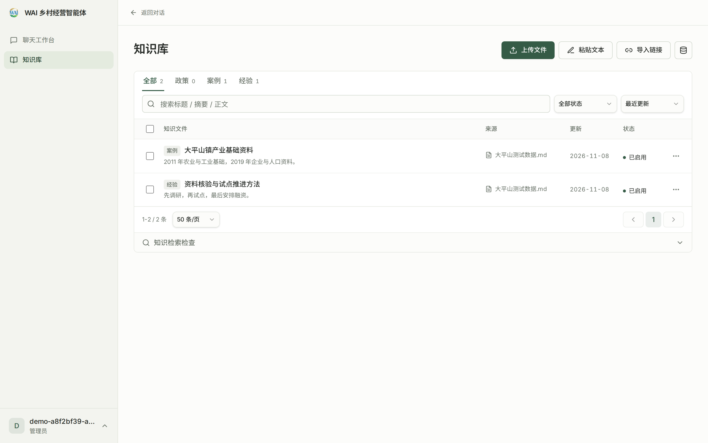
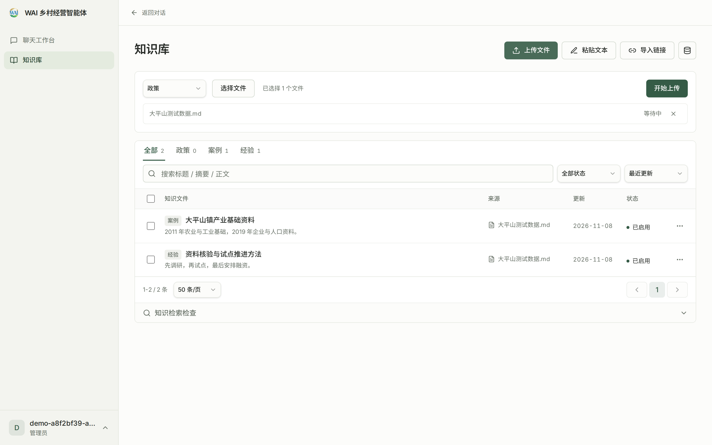

维护知识库
助手能参考什么，取决于知识库里有什么。管理员上传政策文件、案例和经验文章，系统自动处理成可以检索的内容。条目有误可以纠正，过期的可以停用。
#进入知识库
知识库的维护只有管理员能做。点左下角的用户卡片，选「管理后台」，再点左侧的「知识库」；也可以从后台左侧栏直接进入。

知识库分三类材料：政策、案例、经验。类型的含义见知识库。
#查看和查找条目
列表里每一行是一个知识条目，包含标题、类型、来源、状态和更新时间。
- 搜索。 搜索框按标题匹配；摘要与正文不参与搜索。
- 按类型筛选。 「全部类型」「政策」「案例」「经验」。
- 按状态筛选。 「全部状态」下拉框。
- 排序。 「排序方式」下拉框。
- 清除筛选。 点「清除筛选」恢复全部条目。
列表按页显示，底部可以翻页、切换每页条数。
点某一行的标题，进入详情页，可以看到条目的完整内容、决策摘要和类型，以及它被切成的检索片段。
#上传文件

- 点「上传文件」。
- 点「选择文件」，选一个或多个文件。支持 PDF、DOCX、MD（.md、.markdown）、TXT、HTML，可以多选，单个文件不超过 100 MiB。
- 选择材料类型：政策、案例或经验。
- 点「开始上传」。
文件会逐个上传。一个文件失败，不会影响其他文件。上传结束后，页面提示「已上传 N 个文件」，失败的文件会列出原因。
#知识处理流程
上传后，系统自动完成下面几步，不需要手动操作。列表里的状态依次显示：
| 状态 | 含义 |
|---|---|
| 已排队 | 等待处理 |
| 建立检索内容 | 把正文切成片段，计算检索向量并写入索引 |
| 已完成 | 可以被助手检索 |
处理时间随文件长度而不同。列表在有条目处理时会自动刷新。处理失败的条目显示「处理失败」，点「重试」重新处理。
标题和摘要不调用生成模型：没有填写标题时，依次取正文第一个标题、文件名（去掉扩展名）、正文开头；没有填写摘要时，取正文开头的一段文字。两者都可以在入库后修改。
#导入链接
对公众号文章、政府网站页面、新闻，不需要先下载文件。
- 点「导入链接」。
- 粘贴网页链接。
- 需要时填写自定义标题；不填，默认使用网页标题。
- 选择类型，点「开始导入」。
系统按网页链接抓取正文，之后的处理与上传文件相同。
#纠正条目内容
标题和摘要由正文补齐，可能不符合需要。管理员可以直接修改。
- 在列表里点某一行的「编辑」。
- 修改标题、正文、决策摘要、类型和到期日期。
- 点「保存」。正文变化时重建正文索引；标题、摘要或类型变化时更新发现索引并提升版本。
来源信息（文件名或网页链接）由导入时记录，不在编辑里修改。
建议在每条材料入库后，至少检查决策摘要。助手判断一条材料是否适用，主要读这段摘要。
#启用、停用和删除
- 停用。 条目保留在库里，但助手检索不到它。适合暂时不用的材料。
- 启用。 恢复检索。
- 删除。 条目从知识库移除。点「删除」后需要确认。
过期的政策建议停用，并在编辑里填写到期日期。条目状态里有「已过期」一项，可以用状态筛选找出它们。
已经引用过这条材料的历史回答不受影响。历史回答里的引用，仍然显示引用时的正文快照；原条目被删除后，页面会提示原始正文已随条目移除。
#批量操作
勾选列表左侧的复选框，选中多个条目。点「全选当前页」选中本页全部。选中后，上方出现批量工具条，显示「已选 N 条」，可以批量「启用」「停用」「删除」。部分条目失败时，页面会列出成功和失败的数量及原因。
#导出和导入
点「迁移与备份」。
- 导出知识包。 把知识库里的条目导出为一个 JSON 知识包：标题、类型、正文、摘要、来源与到期日期。一个知识包最多 1000 条。
- 导入知识包。 选择知识包导入。导入按条目重新建立，不携带已发布的检索数据，因此导入后要等索引重建完成。
用于备份知识库，或者在另一套系统里复用。导入的条目一律为停用状态，需要手动启用后才会被助手检索。导入时，如果知识包损坏或格式不兼容，页面提示「导入失败」。
部分条目没有导入时，面板会保留文件，并列出失败条目在原包中的序号、标题和原因；没有标题时显示「未提供标题」。可重试同一个包，已成功的条目不会重复创建。若要修改内容，请只将失败条目另存为新包，修正后再选择，避免新包重复包含已成功条目。
#维护建议
知识库的质量取决于材料的质量。定期做三件事：
- 核对日期。 过期的政策停用，或者补上到期日期。
- 核对来源。 条目保存导入时的文件名或网页链接，方便使用者回到原文追溯。
- 检查摘要。 摘要取自正文开头，按材料内容改成更好判断适用性的一句话。